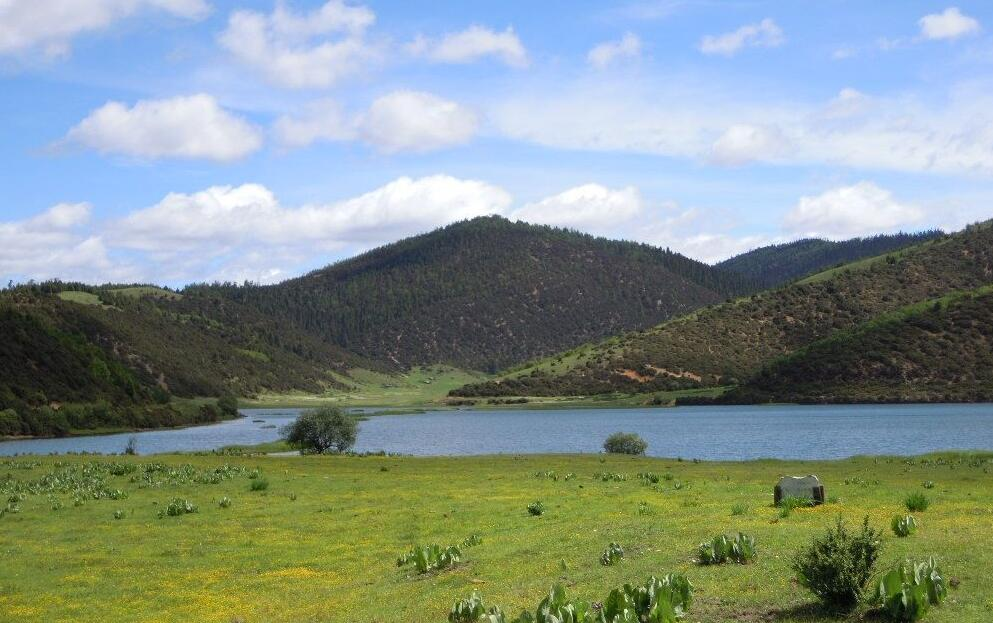
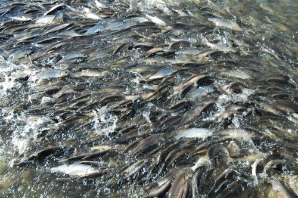

红山水库旅游区 红山水库旅游区坐落在赤峰市东北部。位于著名的西辽河支流———被誉为“契丹·辽文化母亲河”之一的老哈河中游。距赤峰市区90公里。 库区规模 库区总面积214平方公里，总库容25.6亿立方米，水面94平方公里，是内蒙古最大的一座人工湖。近年来，这里又成了发展旅游业的好地方。 景区特色 夏日，湖区内鸥翔鱼跃，碧水微波，沙软湖平，滩宽水清；岸边上林带苍翠，绿树成荫，亭台点点；湖堤下稻田片片，水路弯弯，鸭鹅戏水，渔船悠悠，一幅典型的塞北江南风光，它的自然环境，完全具备了当今湖滨旅游的六大要素：碧水、沙滩、阳光、空气、绿色、美味。是游人回归自然，进行湖水浴、日光浴、沙浴、空气浴等健身休闲和观赏田园风光的理想天然场所，该旅游区接待设施比较完备，年接待中外游人20万次
红山水库还盛产大量华子鱼 ， 华子鱼肉质鲜美，到了春天大量华子鱼朔游而上 ，场面非常壮美
